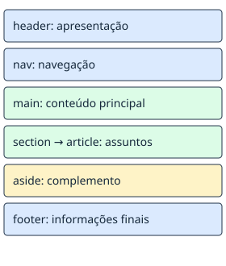

Uma página por vez
HTML significa Linguagem de Marcação de Hipertexto. Ele identifica títulos, parágrafos, links e outras partes do conteúdo.
Escolha a tag pelo significado do conteúdo. Um título deve ser um título de verdade; seu tamanho visual é uma consequência da apresentação do navegador.

- Leia o guia de HTML para entender a estrutura.
- Pratique com o roteiro de revisão.
- Preencha sua ficha de planejamento.